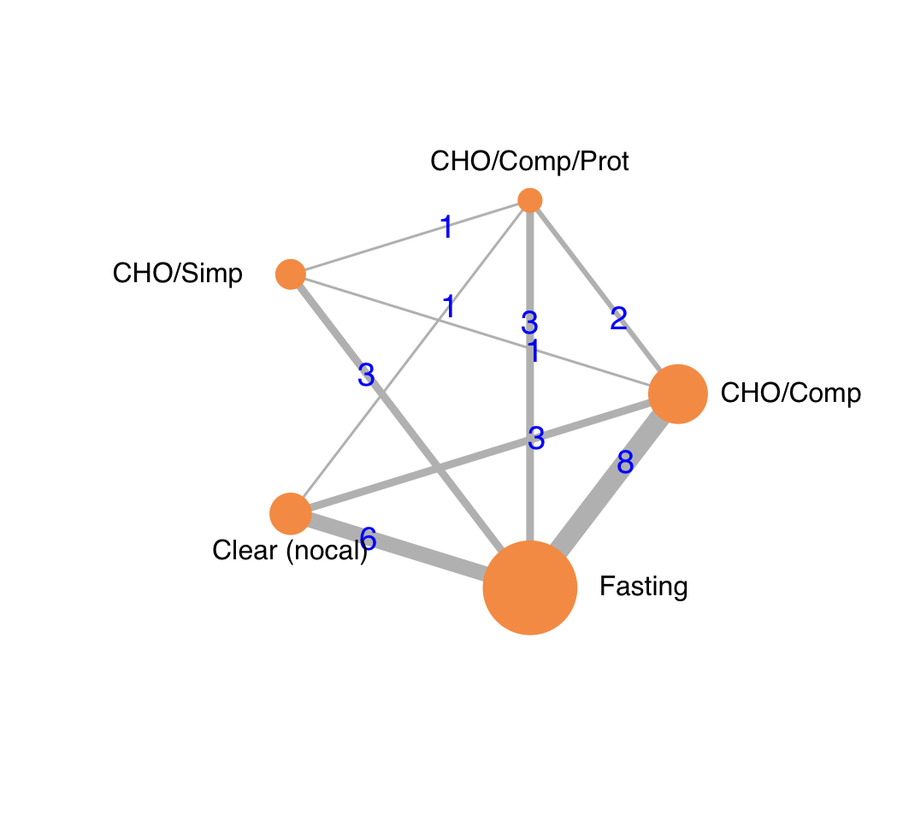
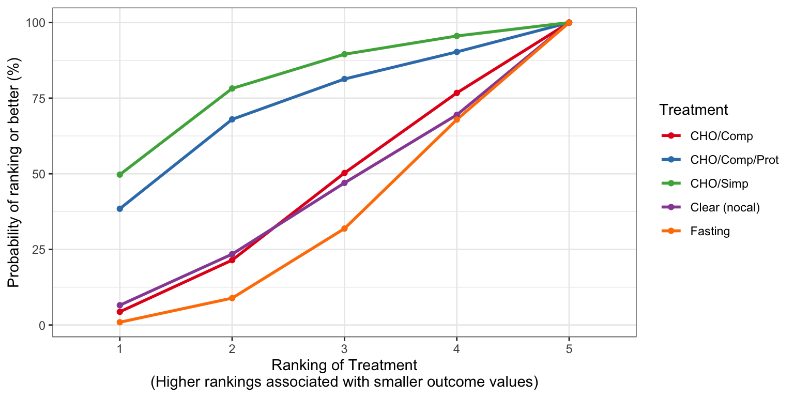
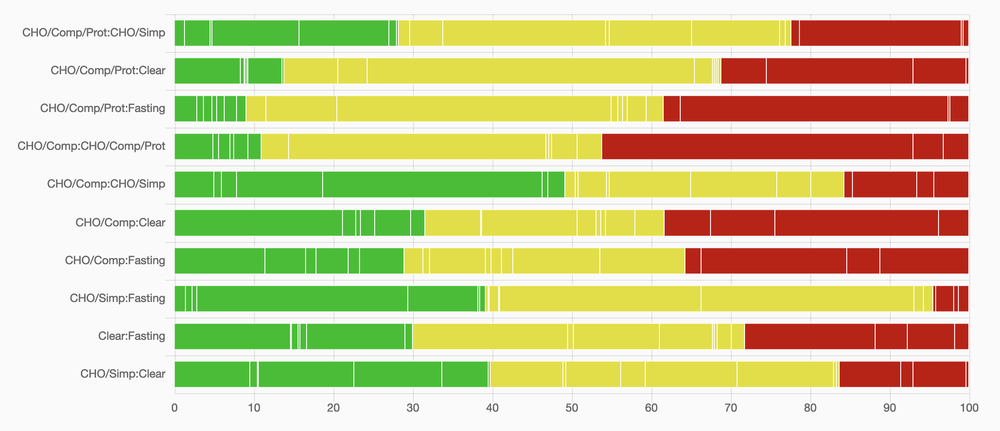

Network Meta-Analyses
17 October, 2021 (11:45)
Last updated: 2021-10-17
Checks: 6 1
Knit directory: Fasting/
This reproducible R Markdown analysis was created with workflowr (version 1.6.2). The Checks tab describes the reproducibility checks that were applied when the results were created. The Past versions tab lists the development history.
The R Markdown file has unstaged changes. To know which version of the R Markdown file created these results, you’ll want to first commit it to the Git repo. If you’re still working on the analysis, you can ignore this warning. When you’re finished, you can run wflow_publish to commit the R Markdown file and build the HTML.
Great job! The global environment was empty. Objects defined in the global environment can affect the analysis in your R Markdown file in unknown ways. For reproduciblity it’s best to always run the code in an empty environment.
The command set.seed(20201201) was run prior to running the code in the R Markdown file. Setting a seed ensures that any results that rely on randomness, e.g. subsampling or permutations, are reproducible.
Great job! Recording the operating system, R version, and package versions is critical for reproducibility.
Nice! There were no cached chunks for this analysis, so you can be confident that you successfully produced the results during this run.
Great job! Using relative paths to the files within your workflowr project makes it easier to run your code on other machines.
Great! You are using Git for version control. Tracking code development and connecting the code version to the results is critical for reproducibility.
The results in this page were generated with repository version 801a2c1. See the Past versions tab to see a history of the changes made to the R Markdown and HTML files.
Note that you need to be careful to ensure that all relevant files for the analysis have been committed to Git prior to generating the results (you can use wflow_publish or wflow_git_commit). workflowr only checks the R Markdown file, but you know if there are other scripts or data files that it depends on. Below is the status of the Git repository when the results were generated:
Ignored files:
Ignored: .DS_Store
Ignored: .Rhistory
Ignored: .Rproj.user/
Ignored: _@@/.DS_Store
Ignored: _@@/Fasting-master-old/.DS_Store
Ignored: _@@/foot_unique.csv
Ignored: _@@/notes.txt
Ignored: _@@/outcome_list.txt
Ignored: _@@/rgv_cinema.csv
Ignored: _@@/rgv_cinema_12.13_7_5_2021.cnm
Ignored: _@@/rgv_cinema_RoB_chart_old.png
Ignored: _@@/rgv_cinema_netplot_old.png
Ignored: _@@/rgv_cinema_random_MD_Report.csv
Ignored: _@@/rgv_meta_dat.csv
Ignored: _@@/study_char_table_cho.csv
Ignored: code/.DS_Store
Ignored: code/_oldCode/
Ignored: code/a_temp_to_run.R
Ignored: code/anchors_cho.txt
Ignored: code/anchors_prot.txt
Ignored: code/calc_mn_sd_med_iqr_range.R
Ignored: code/nma_debug_copy.R
Ignored: code/snips.R
Ignored: code/used_files_dates.txt
Ignored: data/CHOComplicationList_012521.xlsx
Ignored: data/CHOProteinDetail_031021.xlsx
Ignored: data/GumOutcomes_102820.xlsx
Ignored: data/GumOutcomes_102820_old.xlsx
Ignored: data/ProteinSOE_013121.xlsx
Ignored: data/ProteinSOE_121620.xlsx
Ignored: data/SOE_070621_final.xlsx
Ignored: data/SOE_CHO_051721_up.xlsx
Ignored: data/SOE_CHO_060721_up.xlsx
Ignored: data/SOE_CHO_060721_up_mg.xlsx
Ignored: data/SOE_Gum_020421.xlsx
Ignored: data/SOE_Protein_021021.xlsx
Ignored: data/_old/
Ignored: data/contOutcomes_2021-10-06-20-34-40.csv
Ignored: data/contOutcomes_2021-10-06-21-20-19.csv
Ignored: data/dichotOutcomes_2021-07-07-15-57-51.csv
Ignored: data/dichotOutcomes_2021-10-06-20-34-07.csv
Ignored: data/distillersr-Preoperative_Fasting_2020-07-08-17-59-49.xlsx
Ignored: data/fasting_table_add_102720.csv
Ignored: data/gum_soe_112120.xlsx
Ignored: data/hdi_072021.csv
Ignored: data/hunger_rob_summary.svg
Ignored: data/hunger_rob_traffic.svg
Ignored: data/incl_mg_distsr_fasting_2020-11-21_OLD.csv
Ignored: data/incl_mg_distsr_fasting_2021-03-09-17-42-12.csv
Ignored: data/likertOutcomes_2021-10-06-20-34-20.csv
Ignored: data/protein_detail_102320.xlsx
Ignored: data/rob_2021-04-17-11-47-25.csv
Ignored: data/rob_2021-06-22-12-11-42.csv
Ignored: data/rob_2021-06-22-15-06-55.csv
Ignored: data/rob_2021-10-07-16-40-09.csv
Ignored: data/studyArm_2021-10-06-20-35-08.csv
Ignored: data/studyChar_2021-10-07-15-30-19.csv
Ignored: rgv_cinema.csv
Ignored: used_files_dates.txt
Untracked files:
Untracked: _@@/Carbohydrate Drinks.html
Untracked: _@@/Fasting-master_old.zip
Untracked: _@@/all_arms.csv
Untracked: _@@/american-medical-association.csl
Untracked: _@@/anesthesiology.csl
Untracked: _@@/cho_amts.csv
Untracked: _@@/nma_hunger_thirst.Rmd
Untracked: _site.yml_back
Untracked: analysis/.gitignore
Untracked: analysis/jama.csl
Untracked: analysis/nma_final_working.Rmd
Untracked: code/.gitignore
Untracked: code/bayes_sensitivity.R
Untracked: code/bugsnet_test_script.R
Untracked: code/calculations.R
Untracked: code/cho_010420.Rmd
Untracked: code/cho_nausea.R
Untracked: code/clear_outcomes.R
Untracked: code/createCinemaFile.R
Untracked: code/discard.R
Untracked: code/fasting_descriptive.R
Untracked: code/functions.R
Untracked: code/gum_summary_070121.R
Untracked: code/helpers.R
Untracked: code/helpers_old.R
Untracked: code/hrs.R
Untracked: code/hungerRateClear.R
Untracked: code/meanLogFunctions.R
Untracked: code/metaHungerClear.R
Untracked: code/nma_sensitivity.R
Untracked: code/raw_log.R
Untracked: code/readFilesSummary_120220_wfr.R
Untracked: code/robGum.R
Untracked: code/rob_021121.R
Untracked: code/rob_protein.R
Untracked: code/rob_summary.R
Untracked: code/rob_summary_mg.R
Untracked: code/rob_traffic_light.R
Untracked: code/rob_traffic_light_mg copy.R
Untracked: code/rob_traffic_light_mg.R
Untracked: code/select_refids_summary.R
Untracked: code/simp_comp_code.R
Untracked: code/skeleton.bib
Untracked: code/summary_071921.html
Untracked: code/summary_arxiv_072221.Rmd
Untracked: code/summary_arxiv_072221.pdf
Untracked: code/summary_arxiv_072221.tex
Untracked: code/summary_gum_arxiv_072221.Rmd
Untracked: code/summary_gum_arxiv_072221.pdf
Untracked: code/summary_gum_arxiv_072221.tex
Untracked: code/summary_prot_arxiv_072221.Rmd
Untracked: code/summary_prot_arxiv_072221.pdf
Untracked: code/summary_prot_arxiv_072221.tex
Untracked: code/timePlot.R
Untracked: data/.gitignore
Untracked: figures/
Unstaged changes:
Modified: analysis/_site.yml
Modified: analysis/index.Rmd
Modified: analysis/nma_final.Rmd
Modified: analysis/soe_final.Rmd
Modified: code/readFiles_120220_wfr.R
Note that any generated files, e.g. HTML, png, CSS, etc., are not included in this status report because it is ok for generated content to have uncommitted changes.
These are the previous versions of the repository in which changes were made to the R Markdown (analysis/nma_final.Rmd) and HTML (docs/nma_final.html) files. If you’ve configured a remote Git repository (see ?wflow_git_remote), click on the hyperlinks in the table below to view the files as they were in that past version.
| File | Version | Author | Date | Message |
|---|---|---|---|---|
| Rmd | 9e0d755 | Mark Grant | 2021-10-09 | updated all links, corrections to soe |
| html | 9e0d755 | Mark Grant | 2021-10-09 | updated all links, corrections to soe |
| html | 539a728 | Mark Grant | 2021-10-09 | updates cho links and tabs |
| html | e19dcd5 | Mark Grant | 2021-10-08 | updated prot nma correct headings |
| Rmd | 24e2327 | Mark Grant | 2021-10-07 | udpate site |
| html | 24e2327 | Mark Grant | 2021-10-07 | udpate site |
| html | f5a1e58 | Mark Grant | 2021-07-19 | Build site. |
| Rmd | ebaa3b2 | Mark Grant | 2021-07-19 | wflow_publish(“analysis/nma_final.Rmd”) |
| html | 70bd36d | Mark Grant | 2021-07-07 | Build site. |
| Rmd | e949ec0 | Mark Grant | 2021-07-07 | wflow_publish(“analysis/nma_final.Rmd”) |
| html | 21c99d2 | Mark Grant | 2021-07-05 | Build site. |
| Rmd | d9a7eb9 | Mark Grant | 2021-07-05 | wflow_publish(“analysis/nma_final.Rmd”) |
| html | b554229 | Mark Grant | 2021-07-05 | Build site. |
| Rmd | afbe56c | Mark Grant | 2021-07-05 | wflow_publish(“analysis/nma_final.Rmd”) |
| Rmd | 6f48b37 | Mark Grant | 2021-07-04 | deleted timing |
| Rmd | f1a8963 | Mark Grant | 2021-07-04 | updated rgv |
| html | 60b208f | Mark Grant | 2021-06-13 | Build site. |
| Rmd | b733410 | Mark Grant | 2021-06-13 | wflow_publish(c("analysis/_site.yml“,”analysis/index.Rmd“,”analysis/nma_final.Rmd", |
| html | 4bced09 | Mark Grant | 2021-05-17 | Build site. |
| html | f39e6a1 | Mark Grant | 2021-05-17 | Build site. |
| html | 9390d21 | Mark Grant | 2021-05-16 | Build site. |
| html | 7b6f342 | Mark Grant | 2021-05-16 | Build site. |
| html | 3566a66 | Mark Grant | 2021-05-16 | Build site. |
| Rmd | 1222134 | Mark Grant | 2021-05-16 | wflow_publish(c("analysis/_site.yml“,”analysis/index.Rmd“,”analysis/gum_final.Rmd", |
| html | 1df8393 | Mark Grant | 2021-05-15 | Build site. |
| html | b0e4ce7 | Mark Grant | 2021-05-15 | Build site. |
| Rmd | 03d591c | Mark Grant | 2021-05-15 | wflow_publish(c("analysis/_site.yml“,”analysis/index.Rmd“,”analysis/gum_final.Rmd", |
Included Studies
Table 1. Randomized controlled trials included in the network meta-analysis of residual gastric volume (all adults undergoing surgery). See References for citations.
| ID | Study | Analyzed (N) | Centers | Countrya | Surgery |
|---|---|---|---|---|---|
| RCT | |||||
| 4443 | Jarvela 2008 | 101 | 1 | Finland | CABG |
| 3823 | DNascimento 2011 | 50 | 1 | Brazila | Cholecystectomy |
| 3282 | DNascimento 2012a | 28 | 1 | Brazila | Cholecystectomy |
| 3154 | Yildiz 2013 | 60 | 1 | Turkey | Cholecystectomy |
| 2985 | Yilmaz 2013 | 40 | 1 | Turkey | Cholecystectomy |
| 69 | Karimian 2020 | 29 | 1 | Canada | Colorectal |
| 5310 | Maltby 2004 | 130 | 1 | Canada | Elective |
| 3477 | Itou 2012 | 274 | 6 | Japan | Elective |
| 602 | Wang 2019 | 73 | 1 | Chinaa | Endoscopic |
| 3891 | Dalal 2010 | 100 | 1 | Indiaa | Gyn |
| 6287 | Hamid 2012 | 150 | 1 | Irana | No details |
| 2806 | deANascimento 2014 | 24 | 1 | Brazila | Other GI |
| 1117 | Gianotti 2018 | 662 | 5 | Italy | Other GI |
| 1768 | Ajuzieogu 2016 | 88 | 1 | Nigeriaa | Other GI |
| 4236 | De Silva 2009 | 96 | 1 | Sri Lankaa | Other GI |
| 4524 | Yagci 2008 | 70 | 1 | Turkey | Thyroid |
| 7990 | Joshi 2020 | 60 | 1 | Indiaa | Various |
| 3277 | Nakai 2012 | 104 | 1 | Japan | Various |
| 3481 | Braga 2012 | 36 | 1 | Italy | Whipple |
| RCT: randomized controlled trial. | |||||
| a Non very high Human Development Index country. | |||||
Residual Gastric Volume
Network Characteristics
Figure 1. Network plot of comparators in included studies.

Table 2. Network characteristics.
| Characteristic | Value |
|---|---|
| Number of Interventions | 5 |
| Number of Studies | 19 |
| Total Number of Patients in Network | 2085 |
| Total Possible Pairwise Comparisons | 10 |
| Total Number of Pairwise Comparisons With Direct Data | 9 |
| Is the network connected? | TRUE |
| Number of Two-arm Studies | 16 |
| Number of Multi-Arms Studies | 3 |
| Average Residual Gastric Volume (mL) | 21.82 |
Table 3. Number of studies and patients in comparisons represented in the network.
| Comparison | Studies | Patients |
|---|---|---|
| CHO/Comp vs. CHO/Comp/Prot | 2 | 45 |
| CHO/Comp vs. CHO/Simp | 1 | 29 |
| CHO/Comp vs. Clear | 3 | 744 |
| CHO/Comp vs. Fasting | 8 | 445 |
| CHO/Comp/Prot vs. CHO/Simp | 1 | 36 |
| CHO/Comp/Prot vs. Clear | 1 | 26 |
| CHO/Comp/Prot vs. Fasting | 3 | 68 |
| CHO/Simp vs. Fasting | 3 | 438 |
| Clear vs. Fasting | 6 | 470 |
| CHO: carbohydrate; Comp: complex; Prot: protein. |
Table 4. Mean and ranges of residual gastric volumes across included studies.
| Liquid | Studies | Patients | min | max | mean |
|---|---|---|---|---|---|
| CHO/Comp | 10 | 565 | 4.9 | 29.6 | 25.4 |
| CHO/Comp/Prot | 4 | 53 | 4.9 | 54.2 | 27.1 |
| CHO/Simp | 5 | 250 | 9.6 | 51.3 | 16.5 |
| Clear | 7 | 561 | 5.5 | 39.7 | 23.5 |
| Fasting | 16 | 656 | 5.3 | 31.2 | 18.9 |
| CHO: carbohydrate; Comp: complex; Prot: protein; RGV: residual gastric volume; min: minimum; max: maximum. |
Results Summary
Table 5. Mean differences in residual gastric volumes (mL) and 95% CrI from network meta-analysis. Comparisons are top to bottom below the diagonal (eg, Fasting vs. CHO/Comp is 0.71 mL) and bottom to top above the diagonal (eg, CHO/Comp vs. Fasting is -0.71 mL). Note that differences were not identified betwen any comparators, nor were the 95% CrI bounds consistent with potential clinically important differences.
| Fasting |
-0.68 (-5.79 to 4.63) |
-3.63 (-11.59 to 4.45) |
-4.40 (-11.12 to 2.39) |
-0.51 (-6.20 to 5.75) |
|
0.68 (-4.63 to 5.79) |
CHO/Comp |
-2.92 (-11.34 to 5.35) |
-3.72 (-11.61 to 3.98) |
0.19 (-6.53 to 7.21) |
|
3.63 (-4.45 to 11.59) |
2.92 (-5.35 to 11.34) |
CHO/Comp/Prot |
-0.79 (-10.99 to 9.36) |
3.10 (-5.78 to 12.56) |
|
4.40 (-2.39 to 11.12) |
3.72 (-3.98 to 11.61) |
0.79 (-9.36 to 10.99) |
CHO/Simp |
3.89 (-4.58 to 12.92) |
|
0.51 (-5.75 to 6.20) |
-0.19 (-7.21 to 6.53) |
-3.10 (-12.56 to 5.78) |
-3.89 (-12.92 to 4.58) |
Clear |
| 𝞃 = 5.1 mL (95% CrI: 2.9, 9.0) |
Table 6. Estimated mean differences and 95% CrI in residual gastric volume compared with complex carbohydrate containing liquids.
| Comparison | MD (mL) | (95% CrI) |
|---|---|---|
| CHO/Simp vs. CHO/Comp | -3.70 | (-11.60 to 4.00) |
| CHO/Comp/Prot vs. CHO/Comp | -2.90 | (-11.30 to 5.40) |
| Clear vs. CHO/Comp | 0.20 | (-6.50 to 7.20) |
| Fasting vs. CHO/Comp | 0.70 | (-4.60 to 5.80) |
| MD: mean difference; CrI: credible interval; CHO: carbohydrate; Comp: complex; Prot: Protein |
A sensitivity analysis with residual gastric volumes transformed to the log scale to account for skewed distributions yielded consistent results.
Figure 2. Forest plot of estimated mean differences in residual gastric volume compared with complex carbohydrate containing liquids.
Supplemental
Rankings
Figure 3. Comparative rankings for residual gastric volume. Although there were no apparent clinically meaningful differences across comparators, fasting ranked lowest while simple carbohydrate drinks the best.

Inconsistency
Figure 4. Posterior mean deviance comparison plot of consistency and inconsistency models (overall no indication of inconsistency).
| Version | Author | Date |
|---|---|---|
| b554229 | Mark Grant | 2021-07-05 |
Model Fit
Figure 5. Leverage plot and fit statistics for random-effects model.
| Version | Author | Date |
|---|---|---|
| b554229 | Mark Grant | 2021-07-05 |
Carbohydrate Amounts
Figure 6. Total carbohydrate consumed prior to surgery according to type and combined with protein for trials in the network meta-analysis.

CHO: carbohydrate; Comp: complex; Simp: simple; Prot: protein.
Risk of Bias
Figure 7. Risk of bias contributions in network structure across comparisons (from CINeMA1,2).

Figure 8. Summary risk of bias contributions of evidence (trials) to comparisons (from CINeMA1,2).

Figure 9. Summary risk of bias appraisal for randomized controlled trials included in the analyses.
Figure 10. Individual study risk of bias appraisals for randomized controlled trials included in the analyses.
References
R version 4.1.1 (2021-08-10)
Platform: x86_64-apple-darwin17.0 (64-bit)
Running under: macOS Big Sur 10.16
Matrix products: default
BLAS: /Library/Frameworks/R.framework/Versions/4.1/Resources/lib/libRblas.0.dylib
LAPACK: /Library/Frameworks/R.framework/Versions/4.1/Resources/lib/libRlapack.dylib
locale:
[1] en_US.UTF-8/en_US.UTF-8/en_US.UTF-8/C/en_US.UTF-8/en_US.UTF-8
attached base packages:
[1] stats graphics grDevices utils datasets methods base
other attached packages:
[1] meta_5.0-0 formattable_0.2.1 naniar_0.6.1 forcats_0.5.1
[5] stringr_1.4.0 dplyr_1.0.7 purrr_0.3.4 readr_2.0.2
[9] tidyr_1.1.4 tibble_3.1.5 ggplot2_3.3.5 tidyverse_1.3.1
[13] Cairo_1.5-12.2 countrycode_1.3.0 janitor_2.1.0 kableExtra_1.3.4
[17] BUGSnet_1.0.4 rjags_4-12 coda_0.19-4 multinma_0.3.0
loaded via a namespace (and not attached):
[1] minqa_1.2.4 colorspace_2.0-2 ellipsis_0.3.2
[4] visdat_0.5.3 evd_2.3-3 rprojroot_2.0.2
[7] snakecase_0.11.0 fs_1.5.0 rstudioapi_0.13.0-9000
[10] farver_2.1.0 rstan_2.21.2 bit64_4.0.5
[13] fansi_0.5.0 lubridate_1.8.0 mathjaxr_1.4-0
[16] xml2_1.3.2 codetools_0.2-18 splines_4.1.1
[19] extrafont_0.17 knitr_1.36 jsonlite_1.7.2
[22] workflowr_1.6.2 nloptr_1.2.2.2 broom_0.7.9
[25] Rttf2pt1_1.3.9 dbplyr_2.1.1 compiler_4.1.1
[28] httr_1.4.2 backports_1.2.1 assertthat_0.2.1
[31] Matrix_1.3-4 fastmap_1.1.0 cli_3.0.1
[34] later_1.3.0 htmltools_0.5.2 prettyunits_1.1.1
[37] tools_4.1.1 igraph_1.2.6 gtable_0.3.0
[40] glue_1.4.2 V8_3.4.2 Rcpp_1.0.7
[43] cellranger_1.1.0 jquerylib_0.1.4 vctrs_0.3.8
[46] svglite_2.0.0 nlme_3.1-153 extrafontdb_1.0
[49] xfun_0.26 rbibutils_2.2.4 ps_1.6.0
[52] lme4_1.1-27.1 rvest_1.0.1 CompQuadForm_1.4.3
[55] lifecycle_1.0.1 MASS_7.3-54 scales_1.1.1
[58] vroom_1.5.5 hms_1.1.1 promises_1.2.0.1
[61] parallel_4.1.1 inline_0.3.19 metafor_3.0-2
[64] RColorBrewer_1.1-2 yaml_2.2.1 curl_4.3.2
[67] gridExtra_2.3 loo_2.4.1 StanHeaders_2.21.0-7
[70] sass_0.4.0 truncdist_1.0-2 stringi_1.7.5
[73] highr_0.9 boot_1.3-28 pkgbuild_1.2.0
[76] Rdpack_2.1.2 rlang_0.4.11 pkgconfig_2.0.3
[79] systemfonts_1.0.2 matrixStats_0.61.0 evaluate_0.14
[82] lattice_0.20-45 labeling_0.4.2 htmlwidgets_1.5.4
[85] bit_4.0.4 processx_3.5.2 tidyselect_1.1.1
[88] plyr_1.8.6 magrittr_2.0.1 R6_2.5.1
[91] generics_0.1.0 DBI_1.1.1 pillar_1.6.3
[94] haven_2.4.3 whisker_0.4 withr_2.4.2
[97] modelr_0.1.8 crayon_1.4.1 utf8_1.2.2
[100] tzdb_0.1.2 rmarkdown_2.11 readxl_1.3.1
[103] grid_4.1.1 callr_3.7.0 git2r_0.28.0
[106] reprex_2.0.1 digest_0.6.28 webshot_0.5.2
[109] httpuv_1.6.3 RcppParallel_5.1.4 stats4_4.1.1
[112] munsell_0.5.0 viridisLite_0.4.0 bslib_0.3.1